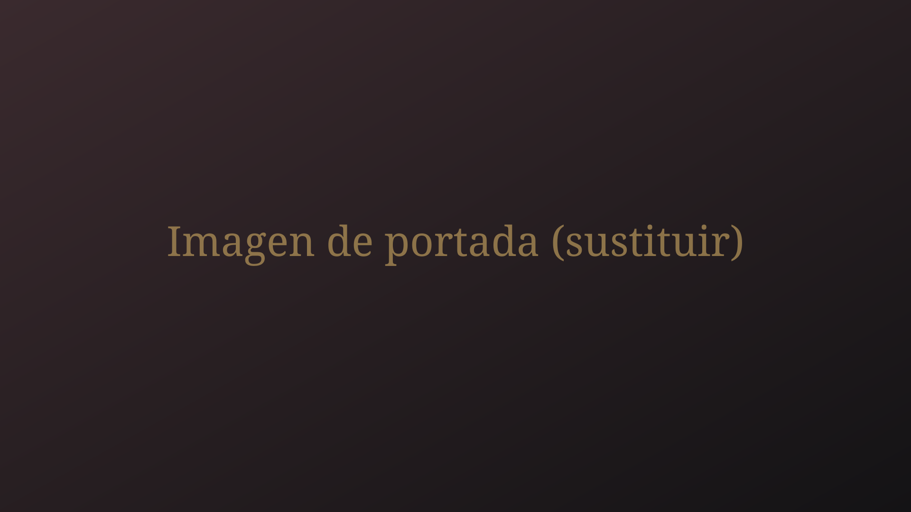

Manu Sánchez
Fotografía Cofrade
La luz, el silencio y la devoción de la Semana Santa de Jerez.
Ver galeríasÚltimas galerías
Ver todasSobre mí
Soy fotógrafo cofrade de Jerez de la Frontera. Mi trabajo se centra en documentar la Semana Santa, las hermandades y las distintas manifestaciones de religiosidad popular a través de la fotografía.
Conocer másContacto y redes
Para encargos, colaboraciones o cualquier consulta.